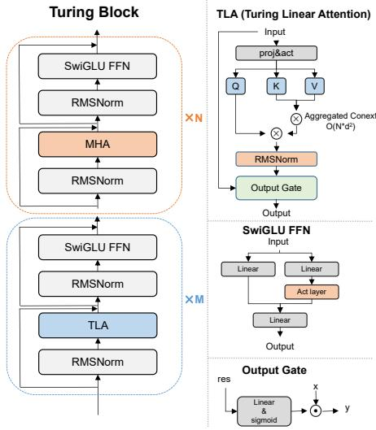
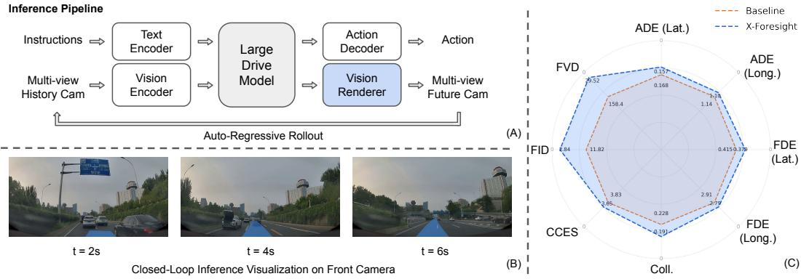
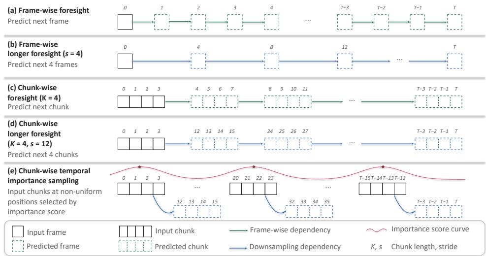
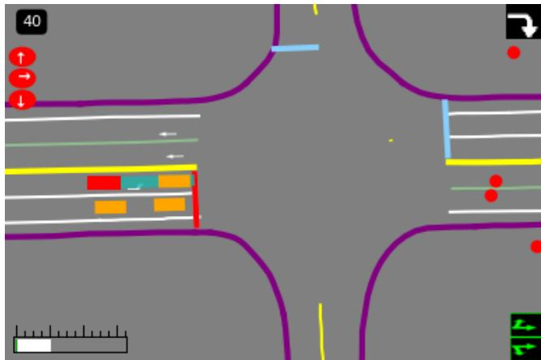
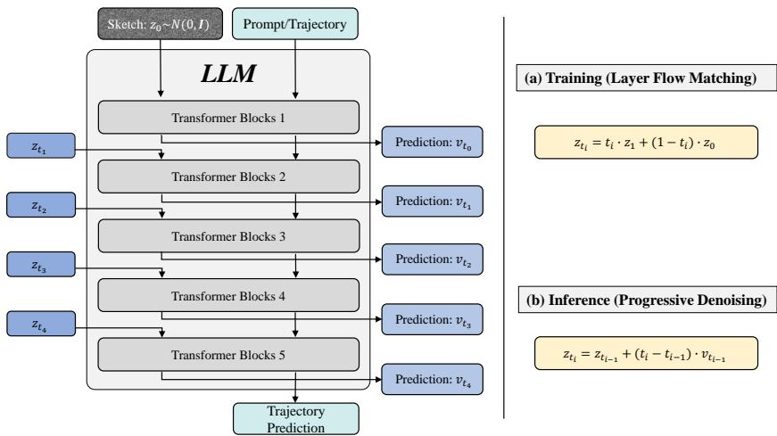
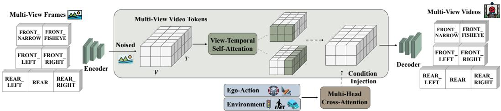
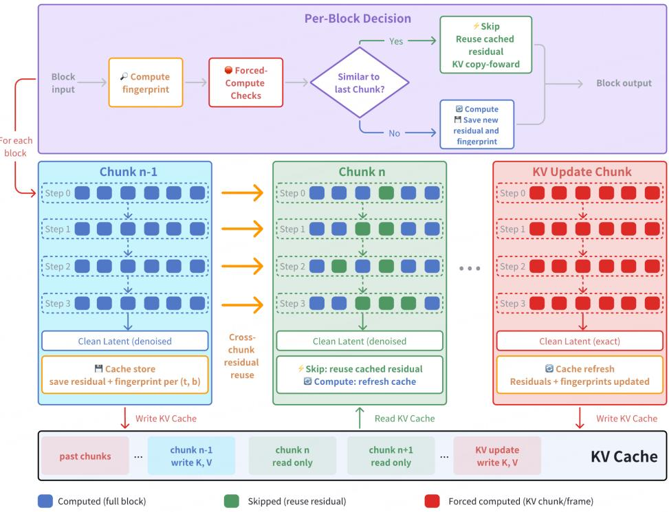

小鹏 VLA 与世界模型技术体系总结
受众： 关注自动驾驶大模型、世界模型与 VLA 架构的研究者和工程师。 最后更新： 2026-08-23 基于论文： TuringViT、X-Foresight、X-Mind、X-World、X-Cache（XPeng，2026）
0. 摘要
从这几篇论文可以看出，小鹏在自动驾驶大模型上的技术路线已经不再局限于传统意义上的"端到端 VLA"，而是在尝试建立一套围绕 Physical Intelligence（物理智能） 的完整技术栈。
其核心问题可以概括成一句话：
自动驾驶模型不能只学会"看到现在之后该怎么开"，还必须学会"如果这么开，未来世界会发生什么"。
传统 VLA 的基本范式是：
即根据当前及历史视觉观测直接生成驾驶动作。
小鹏在 X-Foresight 和 X-Mind 中试图进一步将其变成：
模型在采取动作之前，先显式或隐式地预测未来世界状态，让未来预测本身成为推理过程的一部分。X-Foresight 明确指出，现有 VLA 虽然能够统一感知、推理与控制，但仍然主要属于 reactive policy：模型只能根据历史信息做反应，而无法在行动前模拟未来，因此在碰撞预测、复杂交互和长期因果关系上存在天然限制。
综合五篇工作，可以把小鹏目前公开的技术体系归纳为：
海量图像 / 视频 / 驾驶数据
│
▼
┌────────────────────────┐
│ TuringViT │
│ 视觉基础模型 │
└───────────┬────────────┘
▼
┌────────────────────────┐
│ Large Drive Model │
│ / VLA │
└───────────┬────────────┘
│
┌─────────────┴─────────────┐
▼ ▼
┌──────────────────┐ ┌──────────────────┐
│ X-Foresight │ │ X-Mind │
│ 视频级世界预测 │ │ Visual CoT │
└────────┬─────────┘ └────────┬─────────┘
└─────────────┬─────────────┘
▼
Trajectory / Action
│
▼
┌────────────────────────┐
│ X-World │◄──── X-Cache（推理加速）
│ 生成式世界模拟器 │
└───────────┬────────────┘
▼
闭环评估 / Online RL / 数据合成
│
└──────► 回流数据
因此，小鹏的"世界模型"实际上出现了两种完全不同但互补的形态：
| 世界模型形态 | 代表工作 | 作用 |
|---|---|---|
| Internal World Model | X-Foresight、X-Mind | 让 VLA 在做动作之前"想象未来" |
| External World Model | X-World | 在模型之外构建可以交互的虚拟世界 |
| World Model Infra | X-Cache | 让外部世界模型达到实时闭环所需的推理速度 |
再加上 TuringViT 提供视觉编码基础，小鹏实际上正在形成一套从 Perception → Prediction → Planning → Simulation → RL 的完整闭环。
1. 从 VLA 到"具备未来预测能力的 VLA"
1.1 传统 VLA 的核心问题：Reactive，而不是 Predictive
传统端到端自动驾驶模型可以抽象成：
即：
这种架构即使拥有非常大的参数规模，本质上依然可能在学习：
当前场景长什么样 → 人类驾驶员通常怎么操作
但驾驶是一个强因果、强时间性的任务。例如：
真正优秀的驾驶策略应该考虑：
这就是世界模型引入 VLA 的根本原因。
X-Foresight 将视频视作承载物理世界知识的重要媒介，因为视频同时包含物体外观、空间关系、运动模式和自车运动等时空信息，因此通过"预测未来视频"可以迫使模型学习物理世界中的动态和长期因果关系。(arXiv)
2. 整体技术地图
五篇论文各自解决的是整个体系中的不同瓶颈：
| 工作 | 主要问题 | 核心技术 | 在体系中的角色 |
|---|---|---|---|
| TuringViT | 高分辨率视觉编码成本高 | Turing Linear Attention、VISTA-Curation、Native Dynamic Resolution | 视觉基础模型 |
| X-Foresight | VLA 不具备真正的未来预测能力 | Chunk-wise AR World Modeling + LDM + Vision Renderer | VLA 内生世界模型 |
| X-Mind | 视频世界模型太重，无法高频车端推理 | Abstract Sketch + DC-AE + Recurrent Block Diffusion | Visual CoT |
| X-World | 真实道路无法低成本闭环训练和测试 | Action-conditioned Multi-camera Video World Model | 外部世界模拟器 |
| X-Cache | 世界模型生成速度不足 | Cross-Chunk Block Caching | 世界模型推理基础设施 |
这五项工作并不是彼此独立的论文点子。从工程视角，更适合理解成：
┌──────────────────┐
│ TuringViT │
│ Visual Foundation│
└────────┬─────────┘
│
▼
┌─────────────────────┐
│ VLA / LDM │
└─────────┬───────────┘
│
┌───────────────┴───────────────┐
▼ ▼
X-Foresight X-Mind
Future Video Prediction Visual Thinking
世界预测 世界推理
│ │
└───────────────┬───────────────┘
▼
Trajectory
│
▼
┌──────────────┐
│ X-World │
│ World Sim │
└──────┬───────┘
│
X-Cache 加速
│
▼
Evaluation / Online RL
3. TuringViT：先解决 VLA 的"眼睛"
世界模型和 VLA 的第一层基础仍然是视觉表征。(arXiv)
现代 VLM/VLA 往往直接使用 SigLIP、CLIP 等现成 ViT 作为视觉编码器，但自动驾驶具有几个非常明显的特殊要求：
- 高分辨率；
- 多摄像头；
- 多帧视频；
- 动态输入尺寸；
- 低延迟；
- 长视觉 Token 序列。
传统 Softmax Attention 的复杂度：
当输入从单张低分辨率图片扩展到多摄、多帧、高分辨率输入时，视觉 Token 数量迅速增长。
因此 TuringViT 的核心不是单纯追求更高视觉 benchmark，而是：
重新设计一个更适合 VLM/VLA 和车端部署的视觉基础模型。
TuringViT 将设计归纳为三个部分：Turing Linear Attention、VISTA-Curation 和原生动态分辨率训练。论文报告其在只使用约领先开源 ViT 基线 10% 数据规模的情况下取得更好的视觉和下游多模态表现。
3.1 Turing Linear Attention
其核心 TLA 为：
相比传统 Attention：
它把主要计算路径变成近线性的全局聚合。
但小鹏并没有完全抛弃 Softmax Attention。TuringViT 使用：
也就是：
5 层 Linear Attention + 1 层标准 MHA
周期性重复。这样 TLA 负责低成本全局信息聚合，而少量 MHA 保留显式 token-to-token 交互。18 层版本包含 15 层 TLA + 3 层 MHA，24 层版本包含 20 层 TLA + 4 层 MHA。

图：TuringViT 的 Turing Block 与 18L/24L 配置。
3.2 VISTA-Curation：不是简单增加数据，而是提高监督密度
TuringViT 另一个值得关注的点是：
数据规模并不是唯一决定因素。
VISTA-Curation 针对图像和视频重新生成、过滤和排序描述，使训练信号更加"视觉相关、语义丰富、可区分"。
对于视频，还会聚合：
让视觉编码器不仅学习 object appearance，也学习：
这对于后面的世界模型尤其重要，因为世界模型关心的恰恰不是静态识别，而是：
视觉状态如何随时间发生变化。
3.3 四阶段预训练
TuringViT 采取渐进式四阶段训练路线：
| Stage | 数据 | 主要目的 |
|---|---|---|
| Stage 1 | 55M 无标注图片 | MIM 视觉初始化 |
| Stage 2 | 850M Image-Text | 动态分辨率视觉语言对齐 |
| Stage 3 | 850M Image-Text | Native Resolution |
| Stage 4 | 2M Image/Video-Text | 视频与时序能力适配 |
其本质是逐渐从：
把视觉模型推进到适合 VLA 的输入分布。
4. X-Foresight：让 VLA 真正学习"未来世界"
如果 TuringViT 是"眼睛"，那么 X-Foresight 解决的是：
VLA 是否真正理解物理世界的演化规律。
X-Foresight 并没有简单把一个独立 World Model 接在 VLA 前后，而是：
直接把未来世界预测任务融入 Large Drive Model。
LDM 同时预测：
随后再由一个 diffusion-based Vision Renderer 将抽象视觉 Token 渲染成高清多摄像头未来视频。
整体可以写成：
再由：
形成下一轮输入。

图：X-Foresight 推理架构以及 2s、4s、6s 的未来预测示例。
5. 为什么不能简单做 Next Frame Prediction？
这是 X-Foresight 很重要的一个理论判断。
文本语言模型：
相邻 token 通常有很高的信息增量。
但是视频：
可能 95% 的像素和语义结构都没有明显变化。所以：
很低。如果简单训练：
模型很容易学成：
复制上一帧 + 微小外推
而不是真正学习：
X-Foresight 因此使用 Chunk-wise Autoregressive Prediction。
5.1 Chunk-wise Foresight
不是逐帧预测：
而是：
每个 Chunk 内部保留连续密集帧：
于是同时保留两种时间尺度：
Chunk 内学习：速度、加速度、转向、局部交互——即 Instantaneous Dynamics。
Chunk 之间学习：交通灯变化、路口行为、长期路线意图、多车交互演化——即 Long-term Causality。

图：Frame-wise、Chunk-wise、Longer Foresight 与 Temporal Importance Sampling 的区别。
这是小鹏几篇世界模型论文中反复出现的一个重要思想：
Chunk 是自动驾驶世界模型非常自然的时间建模单位。
后面的 X-World 和 X-Cache 同样沿用了 Chunk 这一抽象。
6. Curriculum Learning：逐渐让模型看得更远
直接让模型预测非常遥远的未来会导致训练困难。X-Foresight 使用：
也就是：
一个关键点是：
扩大 Chunk 之间的 temporal stride，并不需要等比例增加 Token 数。
因此在基本不增加序列计算成本的情况下，可以迫使模型学习更远的因果关系。
7. Temporal Importance Sampling：不是所有时间片都一样重要
大量自动驾驶数据实际上非常"无聊"：
真正决定模型安全能力的是：
因此 X-Foresight 不是均匀训练所有未来片段，而是根据 longitudinal acceleration、lateral acceleration、ego motion、driving behavior 识别重要未来 Chunk。最终：
让安全关键状态得到更多世界模型监督。
X-Foresight 的 Stage I 还同时采用了短到长 Curriculum、Temporal Importance Sampling 和定制的 Block Sparse Attention，以降低长时间序列训练成本。
8. 一个非常关键的设计：世界知识和高清像素生成分离
X-Foresight 并不要求 LDM 自己生成高清图像。这是一个非常值得注意的架构选择。
LDM 主要负责：
而高清纹理（texture、lighting、appearance、pixel details）交给 Diffusion Renderer。
原因在于：
用于 Planning 的世界表示不需要保存每一片树叶、道路纹理和天空细节。
所以：
Renderer 基于 X-World 中的 DiT 和 3D Causal VAE，并通过跨视角/时间 Attention 保持多摄像头几何和时序一致性；在 X-Foresight 最终配置中，Renderer 只接收 LDM 预测的 Camera Token 作为核心控制信号。
X-Foresight 训练进一步采用三阶段路线：
Stage I
训练 LDM
Action + BEV + Camera Tokens
↓
Stage II
单独训练 Vision Renderer
GT Action → Future Video
↓
Stage III
冻结 LDM
Renderer 改为消费
LDM predicted Camera Tokens
这样解决"Teacher Forcing 时的输入分布和真正闭环推理时输入分布不同"的问题。
推理时则形成：
从而可以递归形成长时间闭环 rollout。
9. X-Mind：从"生成未来视频"进一步走向"Visual Chain-of-Thought"
X-Foresight 证明：预测未来可以提升驾驶决策。但新的问题随之出现：
真的有必要在车上生成高清未来视频吗？
对于驾驶模型而言，树叶颜色、建筑纹理、天空云层、车辆漆面——很多信息对于 Planning 实际上并不重要。真正重要的是：
因此 X-Mind 做了一个明显更加激进的抽象：
World Model 不再预测 Photorealistic Video，而是预测 Abstract Sketch。
X-Mind 将 Predictive World Model 直接定义为一种 Visual Chain-of-Thought：模型必须先展开未来世界，再生成驾驶动作，而不是把未来重建作为网络末端的辅助任务。(arXiv)
10. Abstract Sketch：给模型一块"视觉思维画布"
Abstract Sketch 本质上是：
其中包含：
Physical Scene：Ego Vehicle、Surrounding Agents、Road Topology、Lane Boundary。
Driving Prior：Traffic Light、Navigation Intent、Route、Speed Limit、Ego Speed。

图：X-Mind 使用的 Abstract Sketch，它不仅表示物理场景，还把交通灯、导航意图和速度约束编码进同一个 BEV Canvas。
可以把它理解为：
模型不需要在脑子里想象"高清电影"，只需要画一张未来交通草图。
11. 12 帧未来只需要 96 Tokens
即便是 BEV Sketch，如果直接作为高分辨率图像 Token 进入 Transformer，也依然非常昂贵。因此 X-Mind 使用 Deep Compression Autoencoder（DC-AE） 进一步把未来 Sketch 压缩。最终：
这意味着平均：
就能表示一段用于驾驶推理的未来世界。论文将这一点作为让 Visual CoT 能够真正进入资源受限车端的重要条件。
12. Recurrent Block Diffusion：把 Diffusion 塞进一次 Transformer Forward
传统 Diffusion：
意味着需要执行多次模型 Forward，这对车端推理明显不现实。
X-Mind 提出 Recurrent Block Diffusion（RBD）。核心思想是：
不再沿"时间上的多次 Forward"执行 Denoising，而是把不同 Denoising Stage 展开到 LLM 的不同深度。
例如：
LLM Block 1
Denoise Step 1
↓
LLM Block 2
Denoise Step 2
↓
LLM Block 3
Denoise Step 3
↓
LLM Block 4
Denoise Step 4
↓
Future Sketch
于是：
变成：

图：Recurrent Block Diffusion，将逐步去噪展开到大型驾驶模型内部不同 Transformer Block 中。
最终架构变成：
Camera
↓
Visual Encoder
↓
Large Drive Model
│
├── Internal Visual CoT
│ ↓
│ Future Sketch
│
▼
Inverse Dynamics Planner
↓
Trajectory
相比 X-Foresight：
X-Mind 更加接近：
这说明小鹏对"世界模型"的理解已经从"生成未来世界"进一步转向"用未来世界作为模型内部推理空间"。
13. X-Mind 的一个重要实验结论：预测未来比重建现在更重要
X-Mind 对比了 Current Frame Reconstruction、Future 1 Frame、Future 12 Frames，结果如下：
| Prediction Target | FID ↓ | Lateral ADE ↓ | Longitudinal ADE ↓ |
|---|---|---|---|
| Current Frame | 8.97 | 0.1866 | 1.2132 |
| Future 1 Frame | 9.05 | 0.1840 | 1.2124 |
| Future 12 Frames | 9.59 | 0.1765 | 1.1849 |
一个非常有意思的现象是：
Current Reconstruction 的 FID 最好，但是驾驶 ADE 反而最差。
而预测 12 帧未来：图像生成指标更难，但驾驶规划结果最好。它实际上说明：
对于具身智能而言，好的内部世界表征未必需要"看起来最真实"。更关键的是它是否编码：
14. X-World：另一个方向——把 World Model 变成"虚拟现实世界"
X-Foresight / X-Mind 解决的是"车上的 VLA 怎么预测未来"，X-World 解决的则是：
我们能不能在真实道路之外构造一个世界，让 VLA 在里面跑？
其基本模型：
其中 \(X\) 是七摄像头视频，\(A\) 是未来自车动作，\(C\) 是可选世界条件。(arXiv)
因此 X-World 可以做：
本质上就是 Counterfactual Simulation。
15. X-World 的架构：3D Causal VAE + Multi-view DiT
X-World 基于 WAN 2.2 构建。
首先使用高压缩 3D Causal VAE：
压缩比例达到 \(16\times\) Spatial 以及 \(4\times\) Temporal，从而显著缩短 DiT 需要处理的时空序列。随后使用定制 Multi-view DiT。

图：X-World 整体结构。
15.1 View-Temporal Self-Attention
普通 Video Diffusion 主要关注 Time。但自动驾驶有七个摄像头：
因此还必须保证：
之间空间一致。X-World 交替执行：
让模型学习时间一致性 + 跨摄几何一致性，避免出现这类世界状态不一致问题：
16. 世界不仅受 Action 控制，还能被"编辑"
X-World 的 Condition 包括：Ego Action、Dynamic Agents、Static Elements、Camera Parameters、Text Prompt。不同条件采用不同注入方式：
| Condition | Injection |
|---|---|
| Action | adaLN-Zero |
| Flow timestep | adaLN |
| Camera Parameters | Additive Embedding |
| Dynamic Agent | Cross Attention |
| Static Element | Cross Attention |
| Text | Cross Attention |
而且 Dynamic、Static、Text 分别使用独立 Cross-Attention Branch。原因是：
不同 Condition 如果全部塞进同一 Attention，容易产生条件干扰。
于是可以人为构造：
再观察 VLA 会做什么。
17. X-World 为什么必须从 Bidirectional Diffusion 改成 Causal World Model？
Stage I 的 X-World 类似传统高质量 Video Diffusion。一次：
画质很好，但这不是真正的实时 Simulator。闭环驾驶要求：
所以必须 Streaming + Causal + Autoregressive。X-World Stage II 将 Stage I 的双向、多步模型转化为 Chunk-wise Causal Few-Step Model。Chunk 内部依旧允许双向交互保证局部生成质量，但不同 Chunk 之间严格保持时间因果关系。
18. Self-Forcing：专门解决 Autoregressive Drift
训练时如果永远：
但推理时却：
就会产生 Exposure Bias，误差随后持续累积。
因此 X-World Stage II 直接使用模型自己生成的历史训练：
并通过 DMD 让 4-step Causal Student 逼近 Stage I 的高质量 Bidirectional Teacher：
所以最终可以做到：
19. Rolling KV Cache：把 World Model 变成无限流式系统
如果生成 Chunk 1 到 Chunk 100，每一次都重新 Attention 所有历史：
计算和显存会不断增长。因此 X-World 使用固定长度的 Rolling KV Cache：
即 FIFO。这样：
而不是随 rollout 长度持续增长。论文展示了 24 秒多摄像头长时间生成，在延长 rollout 时仍保持较稳定的时序与跨摄像头一致性。
20. X-World 真正重要的地方：它把世界模型变成了 RL Environment
X-World 的最终目的其实并不是"生成自动驾驶视频"。更重要的是：
于是：
┌───────────────┐
│ VLA │
└───────┬───────┘
│ Action
▼
┌───────────────┐
│ X-World │
└───────┬───────┘
│ Observation
▼
┌───────────────┐
│ VLA │
└───────────────┘
这就是 Online RL 的基础。
真实世界里不能让模型故意尝试撞车、故意抢行、故意逼近行人、故意进行极限变道——但 World Model 中可以。
论文明确将 X-World 用于：Closed-loop Evaluation、Hard-case Specialization、Online RL、Corner Case Generation、Data Augmentation、海外驾驶场景的外观迁移。于是数据闭环就变成：
真实车队数据
│
▼
VLA 训练
│
▼
VLA 策略 ──Action──► X-World ──Observation──► 闭环评估
▲ │ │
│ │ ▼
│ │ Hard Case 挖掘
│ │ │
│ │◄───────────────────────┘
│ ▼
│ Online RL ──────► 改进 VLA
│ │
└──── 合成数据 ◄─────┘
这比单纯扩大真实驾驶数据规模更接近一个 Self-Improving Autonomous Driving System。
21. X-Cache：世界模型开始遇到真正的"系统工程问题"
当 X-World 从 Offline Video Generator 变成 Interactive Simulator，最大的瓶颈之一就变成 Latency。(arXiv)
即便已经从几十步 Diffusion 压缩到 4-step，DiT 仍然很重。传统 Diffusion Cache 通常复用相邻 Denoise Step 之间的相似性（Cross-Step Cache），但 Few-Step Diffusion 中每一步变化都很大，已经不存在足够强的冗余。
X-Cache 发现了另一种冗余：Cross-Chunk Redundancy。
22. Cross-Chunk Cache：物理世界本身是连续的
自动驾驶中的 Chunk \(t\) 和 Chunk \(t+1\) 通常变化并不剧烈。道路不会突然消失，建筑不会瞬移，大部分车辆只发生小范围位移。
因此相同（denoise step, transformer block）上的 feature 很相似。于是可以缓存上一 Chunk 中：
下一 Chunk 如果足够相似：
直接复用 Residual。
Chunk N
Block 17
│
├── Compute
│
└── Cache Residual
│
▼
Chunk N+1
Block 17
│
Similarity Check
│
├── Similar → Reuse
│
└── Different → Recompute

X-Cache 最终报告约 \(71\%\) 的 Block Skip Rate，以及约 \(2.6\times\) 的 DiT wall-clock 加速，同时维持较小质量退化。
23. 为什么 X-Cache 不能只看 Feature Similarity？
因为"画面差不多"并不意味着"驾驶动作也差不多"。例如：
所以 X-Cache 的 Fingerprint 不只是视觉 latent，而是：
并且不是直接在 flatten token 上随机采样，而是在 \((F,H,W)\) 三维时空网格中采样。因此 Cache Gate 同时感知 Scene Structure、Scene Drift 与 Control Action。
24. KV Cache Protection：这是 X-Cache 最重要的工程细节之一
Autoregressive World Model 有一类非常危险的 Forward：KV Update。因为当前输出会写入 KV Cache，并成为未来所有 Chunk 的历史。如果这里使用错误近似：
会形成永久污染。因此 X-Cache 规定：
所有写 KV 的关键步骤强制完整计算。
这个设计并非可有可无。消融实验中，如果允许 KV-update Chunk 跳过计算，PSNR 从约 \(53.4\ \mathrm{dB}\) 下降到 \(21.5\ \mathrm{dB}\)，同时 LPIPS 出现数量级恶化，而额外得到的 Skip Rate 收益很有限。
这说明对于 Autoregressive World Model：
Cache 的核心不是"能跳多少计算"，而是"哪些状态绝对不能被近似污染"。
25. 五篇论文背后反复出现的统一设计思想
把这些论文放在一起看，会发现小鹏并不是在堆孤立技巧，而是在反复解决几个相同问题。
25.1 第一原则：Prediction 比 Reconstruction 更重要
传统视觉模型：
世界模型：
两者最大的区别不是生成能力，而是：
模型只有预测未来，才必须理解"如果车辆这样移动，其他交通参与者会怎样响应，世界状态会怎样改变"。X-Mind 的 Future-12-frame 实验尤其直接地支持了这一点。
26. 第二原则：Planning World Representation 不等于 Photorealistic Representation
五篇论文共同体现出一个逐渐明确的分层：
X-Foresight：
X-Mind 则进一步：
而 X-World 因为要作为外部 Simulator，VLA 必须重新"看到"这个世界，所以才真正需要 Photorealistic Multi-Camera Video。
因此三者不是互相冲突，而是针对不同任务选择不同 World Representation：
| Task | 合适的世界表示 |
|---|---|
| 内部 Planning | Semantic Latent |
| Visual CoT | Abstract Sketch |
| Simulator | Photorealistic Video |
27. 第三原则：Chunk 正在成为视频世界模型的"Token"
LLM 的基本单位是 Token。而从这些论文看，小鹏世界模型越来越倾向于把 Temporal Chunk 视作世界演化的基本单位：
- X-Foresight：Chunk-wise Prediction
- X-World：Chunk-wise Causal Generation
- X-Cache：Cross-Chunk Caching
这是一个非常值得关注的统一性。可以类比：
而 Driving World Model：
但一个 Chunk 内部仍保持密集时空信息。
28. 第四原则：训练分布与真实 Rollout 分布必须对齐
几个项目都遇到了同一个问题：
对应解决方式：
| 模型 | 方法 |
|---|---|
| X-Foresight | Renderer Stage III Alignment |
| X-World | Self-Forcing |
| X-Cache | KV Update Protection |
也就是说：
真正困难的已经不只是单步预测准确率，而是模型在自己生成的数据上运行几十、几百步之后还能否稳定。
这实际上是世界模型进入工程阶段之后最重要的问题之一。
29. 第五原则：Compute 本身就是世界模型架构的一部分
小鹏这几篇论文中，几乎每一篇都在直接处理算力问题：
TuringViT
Linear Attention
↓
降低视觉编码复杂度
X-Foresight
Block Sparse Attention
↓
降低 Long Horizon Training Cost
X-Mind
96 Tokens + RBD
↓
降低 Visual CoT Cost
X-World
4-step Distillation + Rolling KV
↓
降低 Streaming Simulation Cost
X-Cache
Cross-Chunk Cache
↓
进一步降低 DiT Inference Cost
例如 X-Foresight 的定制 Block Sparse Attention 将论文报告的单步训练时间从 \(24.50\ \mathrm{s}\) 降到 \(15.40\ \mathrm{s}\)，约为 \(1.59\times\) 加速。
这说明一个很明显的趋势：
世界模型研究正在从"能不能生成"进入"能不能实时运行"。
30. 小鹏世界模型体系可以归纳为"两种想象能力"
综合来看，可以用一个非常简单的框架理解小鹏的路线。
第一种：车自己想象未来。 代表 X-Foresight、X-Mind，目的是 \(Better\ Policy\)。模型问："如果继续这样发展，未来会发生什么？"然后再做动作。
第二种：云端替车辆创造未来。 代表 X-World + X-Cache，目的是 \(Better\ Training + Better\ Evaluation\)。系统问："如果车辆采取这个动作，我能不能创造一个合理的未来世界给它体验？"
最终两者可以形成：
REAL WORLD
│
▼
Fleet Data
│
▼
┌──────────────┐
│ VLA │
│ X-Foresight │
│ X-Mind │
└──────┬───────┘
│
Action
│
▼
┌──────────────┐
│ X-World │
│ + X-Cache │
└──────┬───────┘
│
Future World
│
▼
VLA observes it
│
▼
Evaluation / RL
│
└──────────────┐
│
▼
Better VLA
这才是这五篇论文放在一起之后最值得关注的部分。
31. X-Foresight、X-Mind 与 X-World 的本质区别
| 维度 | X-Foresight | X-Mind | X-World |
|---|---|---|---|
| World Model 所在位置 | VLA 内部 | VLA 深层内部 | VLA 外部 |
| 核心目的 | 学习世界因果 | Visual Reasoning | Simulator |
| 预测对象 | Camera Latent + BEV + Action | Abstract Sketch | Multi-camera Video |
| 是否需要高清图像 | Renderer 需要 | 不需要 | 必须 |
| World Representation | Visual Latent | Compressed Sketch | Video Latent |
| 推理方式 | Chunk AR | Single Forward RBD | Chunk AR Diffusion |
| Planning | 直接联合 | Inverse Dynamics | 不负责 |
| Closed-loop RL | 间接 | 间接 | 核心用途 |
| 对实时性的要求 | 很高 | 极高 | 很高 |
因此更准确地说：
X-Foresight 和 X-Mind 是"Policy World Model"，X-World 是"Environment World Model"。
这是理解小鹏这条技术路线非常重要的区分。
32. 从 X-Foresight 到 X-Mind：世界模型正在变成"隐式思维过程"
如果从技术思想上观察 X-Foresight → X-Mind，可以看到明显变化：
X-Foresight：
X-Mind：
于是 World Model 不再只是一个 Auxiliary Task，而变成：
也就是 Visual Chain-of-Thought。这可能是这几篇论文中，对 VLA 架构演进最重要的信号。
33. 对未来 VLA 架构的启示
如果沿着这条路线继续发展，一个更加成熟的 Physical Intelligence Model 可能会形成：
Observation
│
▼
Visual Foundation Model
│
▼
Semantic World State
│
▼
Future World Rollout
│
├── Future 1
├── Future 2
└── Future 3
│
▼
Evaluate Consequences
│
▼
Action
也就是从 \(ReactivePolicy\) 逐渐转向 \(ModelBasedPolicy\)。但与传统 Model-Based RL 不同，未来的 World State 未必是人工定义的 x,y,v,a，而可能是：
这样的高维表示。
34. 目前仍然存在的核心问题
34.1 Long-Horizon Error Accumulation
即使单步预测很好，也不意味着 100 步 rollout 仍然正确。误差会形成：
X-Foresight 的 Renderer Alignment、X-World 的 Self-Forcing、Rolling KV 以及 X-Cache 的 KV 保护，本质上都在不同层面处理这种闭环误差问题。
34.2 多模态未来
真实世界未来并不是唯一的。例如前车减速，未来可能是保持车道、变道、停车、再次加速。因此真正的：
是多峰分布。X-Foresight 中 L2 Camera Token 更接近多个可能未来的低熵语义汇总，再由生成式 Renderer 从条件分布中实例化具体视觉未来，这已经显露出"语义预测"和"随机生成"分工的必要性。
34.3 Simulator 与真实世界之间仍存在 Sim2Real Gap
如果未来 Online RL 大量依赖 X-World：
那么 World Model 中的系统性错误可能被 Policy 利用，即：
因此世界模型未来不仅需要 FID、FVD，而需要更严格的 Causal Accuracy、Action Consistency、Physical Consistency、Behavioral Fidelity、Long-tail Fidelity 评价体系。
35. 总结：小鹏正在构建的并不是一个 World Model，而是一套 World-Model-Centric Driving Stack
综合 TuringViT、X-Foresight、X-Mind、X-World 和 X-Cache，可以把小鹏目前的技术路线总结为五层：
Layer 1
Visual Foundation
TuringViT
↓
Layer 2
Vision-Language-Action
Large Drive Model
↓
Layer 3
Internal World Reasoning
X-Foresight / X-Mind
↓
Layer 4
External World Simulation
X-World
↓
Layer 5
World Model Infrastructure
X-Cache
它所推动的核心范式变化可以概括为：从 \(Perception\rightarrow Action\) 逐渐转变成 \(Perception\rightarrow Prediction\rightarrow Reasoning\rightarrow Action\)，同时在训练侧形成 \(Action\rightarrow WorldSimulation\rightarrow Observation\rightarrow PolicyImprovement\)，最终形成完整闭环：
从这个角度看，小鹏这些工作的真正重点已经不只是"把自动驾驶模型做得更大"。更准确地说，它们正在尝试解决三个更基础的问题：
第一，模型如何理解物理世界？ 通过预测未来，而不仅仅是识别当前。
第二，模型如何进行物理推理？ 让 World Model 成为内部 Visual Chain-of-Thought。
第三，模型如何规模化获得闭环经验？ 用生成式 World Simulator 代替大量昂贵、危险且不可重复的真实世界探索。
因此，小鹏公开研究中逐渐显现出的技术主线可以概括为：
而 X-Foresight、X-Mind、X-World 与 X-Cache，实际上分别对应这套体系中"会预测" → "会思考" → "会模拟" → "能够实时运行"的四个关键阶段。
参考文献
- TuringViT: Making SOTA Vision Transformers Accessible to All
- X-Foresight: A Joint Vision-Action Causal Forecasting Network via Predictive World Modeling
- X-Mind: Efficient Visual Chain-of-Thought via Predictive World Model for End-to-End Driving
- X-World: Controllable Ego-Centric Multi-Camera World Models for Scalable End-to-End Driving
- X-Cache: Cross-Chunk Block Caching for Few-Step Autoregressive World Models Inference